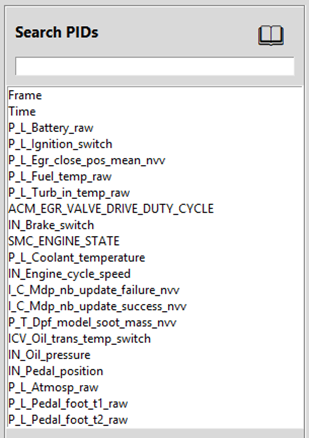

Search PIDs
The Search PIDs panel is located in the left side of the main window and provides a powerful way to find and select PIDs from your snapshot.

Understanding PID Names
The PID list box displays all available parameters from the loaded snapshot. PID names can appear cryptic at first, but they follow consistent naming conventions that make them easier to identify:
Common PID Naming Prefixes
- P_L - Physical Layer parameters (raw sensor values)
- IN - Calculated Values (Internal)
- ACM - Air Charge Management
- SMC - System Mode Control
- I_C - Injection Control
- P_T - Post Treatment
- AFC - Air Fuel Control
- EUD - Engine Use Data
- FQD - Fuel Quantity Demand
- ICI - Instrument Cluster Interface
- ICV - Input Cross Validation
- ITD - Injection Timing Demand
- PSE - Pressure State Estimate
- RPC - Rail Pressure Control
- SAC - Start Aid Control
- T_D - Torque Demand
Example: PIDs starting with P_L represent Physical Layer data.
Searching for "P_L" will show all raw sensor values like P_L_Battery_raw, P_L_Atmosp_raw, and P_L_Fuel_temp_raw.
Live Filtering Search
The search box provides live filtering that updates the PID list as you type:
How It Works
- Type to filter - Start typing any part of a PID name in the search box
- Instant results - The list automatically filters to show only matching PIDs
- Case-insensitive - Search works regardless of capitalization
- Partial matching - Matches any PID containing your search term
- Clear to reset - Delete the search text to show all PIDs again
Search Strategies
Use these search techniques to quickly find the PIDs you need:
- Search by prefix - Type "P_L_" to see all Physical Layer parameters
- Search by type - Type "temp" to find all temperature-related PIDs
- Search by system - Type "egr" to find all EGR-related parameters
- Search by function - Type "pressure" to find all pressure sensors
- Search by component - Type "fuel" to find all fuel system PIDs
Tip: The live filtering search is especially useful when you know the general category of PIDs you need but don't remember the exact names. For example, searching "speed" will show engine speed, vehicle speed, and any other speed-related parameters.
Multi-Select Capability
The PID list box supports multiple selection methods, making it easy to add groups of related PIDs to your chart:
Selection Methods
- Single click - Select one PID
- Ctrl + Click - Add individual PIDs to your selection
- Shift + Click - Select a range of PIDs from the first click to the second
- Ctrl + A - Select all visible PIDs (useful after filtering)
Adding Groups of PIDs at Once
The combination of live filtering and multi-select makes it easy to add entire groups of related PIDs to your chart in one operation:
Workflow Example
- Filter the list - Type "P_L_" to show only Physical Layer parameters
- Select multiple PIDs - Use Ctrl+Click or Shift+Click to select the ones you want
- Add to axis - Click ➕ Add to Primary or ➕ Add to Secondary
- All selected PIDs are added - They appear in the axis list box and on the chart
Practical Example: To chart all temperature sensors together:
- Type "temp" in the search box
- Press Ctrl+A to select all temperature PIDs
- Click ➕ Add to Primary
- All temperature parameters are now on your chart
Add to Primary and Secondary Buttons
After selecting PIDs, use these buttons to assign them to chart axes:
➕ Add to Primary
Adds selected PIDs to the Primary axis (left). These PIDs will be plotted against the left Y-axis of the chart. Use this for your main parameters of interest or PIDs with similar value ranges.
➕ Add to Secondary
Adds selected PIDs to the Secondary axis (right). These PIDs will be plotted against the right Y-axis of the chart. Use this for parameters with different units or scales that you want to overlay on the same chart.
Note: The chart updates automatically when you add PIDs to either axis. You don't need to click a separate "Plot" button unless you're also changing axis ranges.
PID Descriptions Button
The book icon button in the upper-right corner of the Search PIDs panel opens the PID Descriptions window. This window shows detailed information about each PID, including:
- Full PID names and descriptions
- Units of measure
- Additional context about what each parameter represents
Tips for Effective PID Searching
- Learn the prefixes - Familiarize yourself with common prefixes like P_L_, IN_, and ACM_ to quickly identify parameter types
- Use broad searches first - Start with general terms like "pressure" or "temp" to see what's available
- Combine search with multi-select - Filter to a category, then select multiple PIDs to add them all at once
- Group related PIDs - Add related parameters to the same axis for easier comparison
- Experiment with searches - Try different search terms to discover PIDs you might not have known existed
- Clear between searches - Clear the search box between different searches to avoid confusion
Common Search Examples
| Search Term |
What It Finds |
P_L_ |
All Physical Layer (raw sensor) values |
temp |
All temperature-related PIDs |
pressure |
All pressure sensors and parameters |
egr |
All EGR system parameters |
fuel |
All fuel system PIDs |
rail |
Rail pressure and related parameters |
speed |
Engine speed, vehicle speed, and related PIDs |
battery |
Battery voltage and electrical system PIDs |
Related Topics